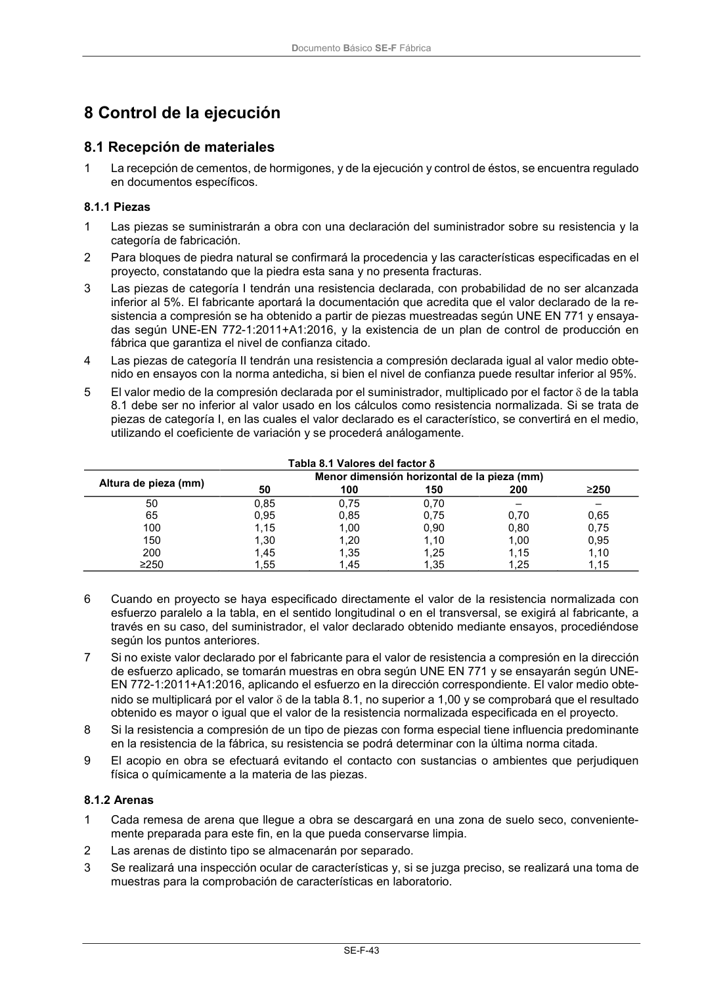

DB-SE-F · 8.1.1 Piezas · versión 2019-12-20 · capa oficial
Formatos: JSON compacto · Markdown · PDF fuente
Ámbito del documento · texto del ámbito · documento y tablas
ID técnico a0103 · PDF pág. 47 · jerarquía no validada por persona · contrastado con el literal de la página 47 (candidato tipográfico); no validado por persona · padre: raíz
8.1.1 Piezas 1 Las piezas se suministrarán a obra con una declaración del suministrador sobre su resistencia y la categoría de fabricación. 2 Para bloques de piedra natural se confirmará la procedencia y las características especificadas en el proyecto, constatando que la piedra esta sana y no presenta fracturas. 3 Las piezas de categoría I tendrán una resistencia declarada, con probabilidad de no ser alcanzada inferior al 5%. El fabricante aportará la documentación que acredita que el valor declarado de la re- sistencia a compresión se ha obtenido a partir de piezas muestreadas según UNE EN 771 y ensaya- das según UNE-EN 772-1:2011+A1:2016, y la existencia de un plan de control de producción en fábrica que garantiza el nivel de confianza citado. 4 Las piezas de categoría II tendrán una resistencia a compresión declarada igual al valor medio obte- nido en ensayos con la norma antedicha, si bien el nivel de confianza puede resultar inferior al 95%. 5 El valor medio de la compresión declarada por el suministrador, multiplicado por el factor de la tabla 8.1 debe ser no inferior al valor usado en los cálculos como resistencia normalizada. Si se trata de piezas de categoría I, en las cuales el valor declarado es el característico, se convertirá en el medio, utilizando el coeficiente de variación y se procederá análogamente. Tabla 8.1 Valores del factor Altura de pieza (mm) Menor dimensión horizontal de la pieza (mm) 50 100 150 200 ≥250 50 0,85 0,75 0,70 – – 65 0,95 0,85 0,75 0,70 0,65 100 1,15 1,00 0,90 0,80 0,75 150 1,30 1,20 1,10 1,00 0,95 200 1,45 1,35 1,25 1,15 1,10 ≥250 1,55 1,45 1,35 1,25 1,15 6 Cuando en proyecto se haya especificado directamente el valor de la resistencia normalizada con esfuerzo paralelo a la tabla, en el sentido longitudinal o en el transversal, se exigirá al fabricante, a través en su caso, del suministrador, el valor declarado obtenido mediante ensayos, procediéndose según los puntos anteriores. 7 Si no existe valor declarado por el fabricante para el valor de resistencia a compresión en la dirección de esfuerzo aplicado, se tomarán muestras en obra según UNE EN 771 y se ensayarán según UNE- EN 772-1:2011+A1:2016, aplicando el esfuerzo en la dirección correspondiente. El valor medio obte- nido se multiplicará por el valor de la tabla 8.1, no superior a 1,00 y se comprobará que el resultado obtenido es mayor o igual que el valor de la resistencia normalizada especificada en el proyecto. 8 Si la resistencia a compresión de un tipo de piezas con forma especial tiene influencia predominante en la resistencia de la fábrica, su resistencia se podrá determinar con la última norma citada. 9 El acopio en obra se efectuará evitando el contacto con sustancias o ambientes que perjudiquen física o químicamente a la materia de las piezas.

PDF fuente redistribuible: copia fiel enlazada en esta página (SHA256 verificado).